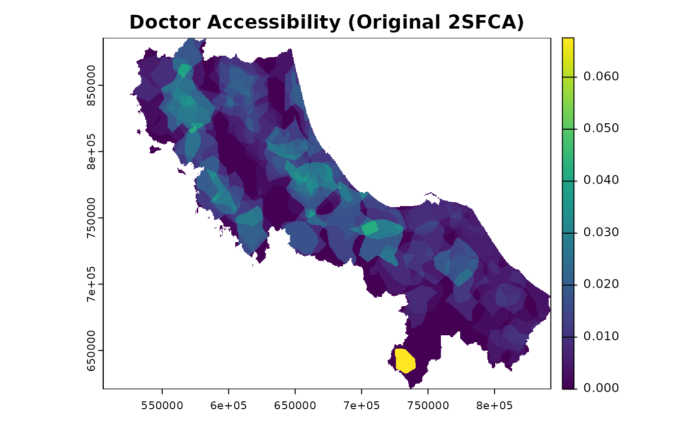

Calculate Original Two-Step Floating Catchment Area (2SFCA) accessibility scores
Source:R/03-spax_e2sfca.R
spax_2sfca.RdImplements the original Two-Step Floating Catchment Area (2SFCA) method using binary catchment areas, as proposed by Luo & Wang (2003). This foundational method uses a single distance/time threshold to define service areas and computes accessibility as a ratio of supply to demand within these catchments.
Usage
spax_2sfca(
demand,
supply,
distance,
threshold,
id_col = NULL,
supply_cols = NULL,
snap = FALSE
)Arguments
- demand
SpatRaster representing spatial distribution of demand
- supply
vector, matrix, or data.frame containing supply capacity values
- distance
SpatRaster stack of travel times/distances to facilities
- threshold
Numeric value defining the catchment area cutoff (same units as distance)
- id_col
Character; column name for facility IDs if supply is a data.frame
- supply_cols
Character vector; names of supply columns if supply is a data.frame
- snap
Logical; if TRUE enable fast computation mode (default = FALSE)
Details
The original Two-Step Floating Catchment Area (2SFCA) method operates in two steps:
Step 1: For each facility j: * Define a catchment area within threshold distance/time * Sum the population of all demand locations i within the catchment * Calculate supply-to-demand ratio Rj = Sj/sum(Pi)
Step 2: For each demand location i: * Define a catchment area within threshold distance/time * Sum all facility ratios Rj within the catchment * Final accessibility score Ai = sum(Rj)
Key characteristics: 1. Binary catchment areas (within threshold = 1, beyond = 0) 2. Equal weights for all locations within catchment 3. No normalization of demand weights 4. Single threshold value for both steps
Limitations addressed by later methods: * No distance decay within catchments * Artificial barriers at catchment boundaries * Potential demand overestimation in overlapping areas
References
Luo, W., & Wang, F. (2003). Measures of Spatial Accessibility to Health Care in a GIS Environment: Synthesis and a Case Study in the Chicago Region. *Environment and Planning B: Planning and Design*, *30*(6), 865-884. https://doi.org/10.1068/b29120
See also
* [spax_e2sfca()] for the enhanced version with distance decay * [compute_access()] for more flexible accessibility calculations
Examples
# Load example data
library(terra)
library(sf)
#> Linking to GEOS 3.10.2, GDAL 3.4.1, PROJ 8.2.1; sf_use_s2() is TRUE
# Convert under-5 population density to proper format
pop_rast <- rast(u5pd)
# Drop geometry for supply data
hc12_hos <- hc12_hos |> st_drop_geometry()
# Calculate accessibility to doctors with 30-minute catchment
result <- spax_2sfca(
demand = pop_rast,
supply = hc12_hos,
distance = rast(hos_iscr),
threshold = 30, # 30-minute catchment
id_col = "id",
supply_cols = "s_doc"
)
# Plot the results
plot(result, main = "Doctor Accessibility (Original 2SFCA)")

# Calculate accessibility to multiple supply types
result_multi <- spax_2sfca(
demand = pop_rast,
supply = hc12_hos,
distance = rast(hos_iscr),
threshold = 30,
id_col = "id",
supply_cols = c("s_doc", "s_nurse")
)
# Plot both doctor and nurse accessibility
plot(result_multi)